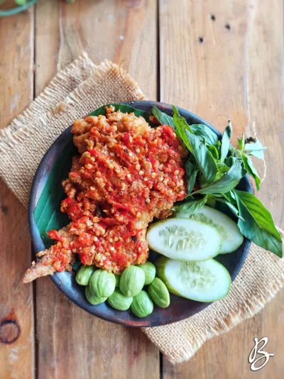

Ayam Geprek

Bahan-bahan
- Ayam - 250 gram
- Air perasan jeruk nipis - 1/2 sdt
- Garam - 1/4 sdt
- Merica bubuk - 1/4 sdt
- Bawang putih bubuk - 1/4 sdt
- Pencelup:
- Telur, kocok lepas - 1 butir
- Tepung bumbu:
- Tepung terigu - 5 sdm
- Tepung maizena - 1 sdm
- Tepung beras - 1 sdm
- Garam - 1 sdt
- Merica bubuk - 1/2 sdt
- Bawang putih bubuk - 1 sdt
- Sambal:
- Cabai rawit merah - 7 buah
- Cabai merah keriting - 1 buah
- Bawang putih - 1 siung
- Garam - 1/2 sdt
- Gula - 1/2 sdt
Langkah-langkah
- Lumuri dan marinasi ayam dengan air perasan jeruk nipis, garam, bawang putih bubuk, dan merica. Diamkan selam 15 menit.
- Dalam wadah, campur semua bahan tepung bumbu dan aduk sampai rata. Ayak campuran tepung. Sisihkan.
- Siapkan kocokan telur, sisihkan.
- Panaskan minyak goreng dengan api sedang.
- Ambil potongan ayam, gulingkan dan baluri dengan tepung bumbu lalu celupkan ke dalam kocokan telur. Baluri lagi dengan tepung bumbu lalu celupkan ke dalam kocokkan telur. Baluri lagi dengan tepung bumbu sambil ditekan-tekan dan dicubit agar hasilnya bisa keriting dan renyah. Ketuk-ketuk ayam untuk membuang kelebihan tepung.
- Goreng ayam dengan minyak panas hingga matang berwarna kecoklatan. Angkat dan tiriskan.
- Sambal: ulek semua bahan sambal hingga rata.
- Ambil ayam, taruh di atas sambal dan geprek (memarkan) hingga setengah hancur dan tercampur rata dengan sambal.
- Siap disajikan.
Catatan
- Saat menggoreng, gunakan minyak yang banyak dan panas serta api kecil agar rata matangnya.
- Jangan terlalu menekan-nekan ayam saat proses pembaluran dengan tepung agar hasilnya tidak keras.
Kembali ke atas
Menu lainnya